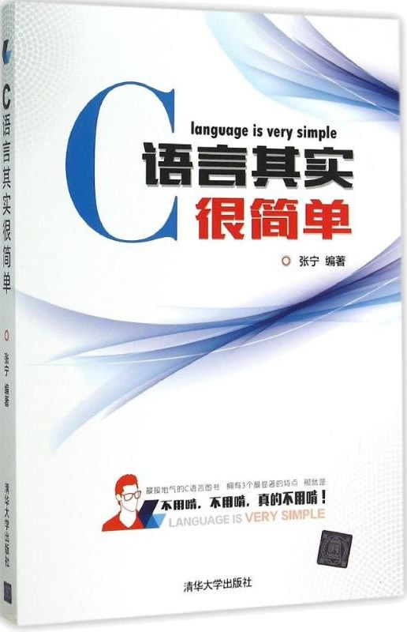

首页 > 书籍下载
《C语言其实很简单》张宁PDF下载（高清完整版）
|  | 作者：张宁 |
| 出版时间：2015年06月01日 | |
| 出版社：清华大学出版社 | |
| 书号ISBN：9787302397519 | |
| 总页数：390 | |
| 总字数：63.1W |
这是一本专为初学者编写的 C 语言书籍，语言通俗易懂，知识点全面，实例丰富，非常适合 0 基础、对 C 语言感兴趣的读者。
这里提供的是《C语言其实很简单》张宁的高清 PDF 下载，内容完整，附带目录标签。
为了方便初学者理解 C 语言的各个知识点，快速入门 C 语言，作者在这本书中做了以下几个方面的努力：
- 讲解 C 语言的知识点时，尽量用通俗易懂的语言，而不是专业术语；
- 作者在一些关键位置插入了精美的图片，便于读者理解；
- 对于某些知识点的讲解，提供了一些小窍门、小技巧和小口诀，辅助读者理解和记忆；
- 书中精选了大量贴近生活的实例，锻炼读者的 C 语言编程能力。
下面是一位购买了这本书的读者给出的好评：
书里的插图很专业，程序分析的很透彻，比以前看的 C 语言书要强太多了。一看就懂了，学起来很容易，适合初学者。感觉作者很认真，现在这样认真写书的作者不多了。
书籍目录
- 第1章 从这里爱上编程——程序设计和C语言概述
- 1.1 水面下的冰山——计算机程序和计算机语言
- 1.2 第一次亲密接触——纵览C语言
- 1.3 先其利器——VisualC++6.0上机指导
- 1.4 天平称物问题——进制转换
- 第2章 色彩斑斓的积木——数据类型、运算符和表达式
- 2.1 标识符、常量和变量
- 2.2 追根“数”源——细说数据类型
- 2.3 诸算达人——运算符和表达式
- 2.4 位在我心中——位运算
- 第3章 一战到底——顺序结构
- 3.1 整装待发——C语言中的语句
- 3.2 别急，一个一个来——单个字符的输出与输入
- 3.3 更过瘾的输出与输入——格式输出与输入
- 3.4 常用系统数学函数
- 3.5 是不是有点专业级软件的意思了——顺序结构程序举例
- 第4章 程序也能跑捷径——选择结构
- 4.1 计算机的判断力——关系运算和逻辑运算
- 4.2 如果——if语句
- 4.3 多路开关——switch语句
- 4.4 goto去哪？想去哪就去哪！——goto语句
- 第5章 不必亲手愚公移山——循环结构
- 5.1 看好了情况再下手——while语句
- 5.2 先下手干了再说——do while语句
- 5.3 我勤奋·我劳动·我光荣——for语句
- 5.4 循环里的循环——循环的嵌套
- 5.5 埋头干活中的抬头看路——continue语句和break语句
- 5.6 轻车熟路——程序控制结构小结和综合举例
- 第6章 把平房升级为高楼大厦——数组
- 6.1 直线升级——一维数组
- 6.2 找东西和整理东西的艺术——查找和排序
- 6.3 立体升级——二维数组
- 第7章 蒙着面干活——函数
- 7.1 从讲故事开始——函数概述
- 7.2 该是学写多段文章的时候了——函数定义和调用
- 7.3 喂！听到了吗——函数的声明
- 7.4 函数的嵌套调用和递归调用
- 7.5 变量的时空范围——变量的作用域及存储类别
- 7.6 给编译做点儿手脚——预编译处理
- 第8章 璀璨的星星——指针
- 8.1 内存里的门牌号——地址和指针的基本概念
- 8.2 别拿地址不当值——指针变量
- 8.3 原来咱俩是一个朋友圈的——数组与指针
- 8.4 有了地址也可以找我帮忙啊——函数与指针
- 8.5 一两拨千斤——字符串的指针
- 8.6 另类运行程序——main函数的参数
- 第9章 我的类型我做主——结构体与共用体
- 9.1 多功能收纳盒——结构体
- 9.2 公路桥洞——共用体
- 9.3 给类型起个“绰号”——类型定义符typedef
- 9.4 内存空间的批发和零售——动态存储分配
- 9.5 电影院里的座次问题——链表
- 第10章 得文件者得天下——文件
- 10.1 一针hold住全文件——文件指针
- 10.2 搬运流水线——文件的读写
- 10.3 这是手工活儿——文件的随机读写
- 第11章 编程的经验财富——算法与数据结构基础
- 11.1 “一招鲜”——算法
- 11.2 数据结构概述
- 11.3 早出晚归的勤快人——栈（堆栈）
- 11.4 先来后到——队列
- 11.5 倒置的树——树与二叉树
- 第12章 程林高手 ——软件开发基础
- 12.1 编程之道——程序设计方法
- 12.2 不懂门道看热闹，看完咱也吊一吊——软件工程基础
- 12.3 信息时代是怎样炼成的——数据库和数据库设计初步
- 附录
- 附录一 常用字符ASCII码对照表
- 附录二 C语言中的关键字
- 附录三 C语言运算符的优先级和结合性
书籍下载
一键登录，免费下载完整版 PDF，文件名称：《C语言其实很简单》张宁.pdf